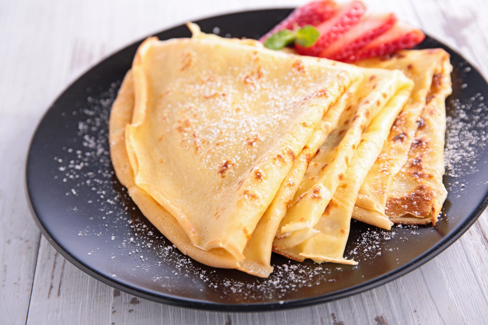

Crepas Dulces Casera
Con esta receta aprenderás a preparar la auténtica masa para crepas dulces de forma fácil y rápida. Asimismo, elabora un desayuno original, prepara un elegante postre o mata un antojo con unas riquísimas crepas dulces.
Debes saber que las crepas o crepes son una receta de origen francés que se elaboran a partir una masa semi-líquida hecha con harina de trigo y otros ingredientes que pueden variar en función de si las queremos hacer saladas o dulces.
Ingredientes
- 1 taza de leche (240 mililitros)
- 1 taza de harina de trigo (140 gramos
- 1 huevo
- 1 cucharadita de azúcar
- 2 cucharadas soperas de esencia de vainilla
- 2 cucharadas soperas de mantequilla derretida
Instrucciones para hacer las crepas
- Para empezar con la preparación de nuestras crepas dulces introduce en un recipiente el huevo, la mantequilla derretida, la leche y el azúcar. Bátelo todo hasta que se integren bien los ingredientes. Si dispones de licuadora puedes utilizarla. Añade también la esencia de vainilla y sigue batiendo.
- Ahora, añade poco a poco la harina y sin dejar de batir. Te aconsejamos que tamices previamente la harina de trigo para que quede más fina y el resultado sea una masa más suave. La receta de crepes original se elabora a partir de este tipo de harina, pero si quieres realizar una más saludable te animamos a que visites nuestra receta de crepes de avena.
- Luego, pon a calentar una sartén con un poco de mantequilla para que las crepas dulces no se queden pegadas. Cuando esté caliente, deja caer la cantidad de mezcla necesaria de manera que puedas mover la sartén en forma circular, se reparta sin dejar huecos vacíos y quede una capa fina.
- Cuando las crepas dulces se llenen de pequeñas burbujas deberás darle la vuelta con cuidado. Se trata de un postre que se hace muy rápido, por lo que no deberá estar en el fuego más de 2 minutos. Con estas cantidades obtendrás aproximadamente 10 crepas dulces, en función del tamaño de la sartén que uses conseguirás más o menos.
- Para acompañar estas crepas dulces caseras tienes varias posibilidades, puedes decantarte por leche condensada, helados caseros, chocolate fundido..., ¡en la variedad está el gusto!
- Por ultimo, disfruta de la perfecta crepa que has creado. !Provecho!
